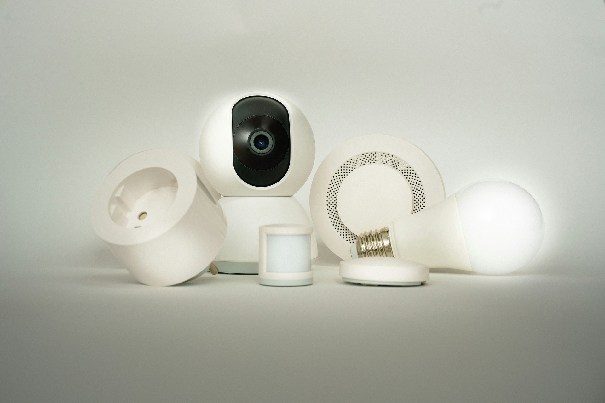

03 / CAMERAS & CCTV
A clearer view of
what matters.
Think beyond the camera itself. Coverage, connectivity, recording and access all need to work together for a useful system.
- Coverage planning
- Consider entrances, outbuildings and the areas you want to see, including lighting and available viewpoints.
- Connectivity & recording
- Discuss how cameras connect, where footage is stored and how the system fits your network.
- Viewing & access
- Consider who needs access, how they will view the cameras and how to keep that access controlled.